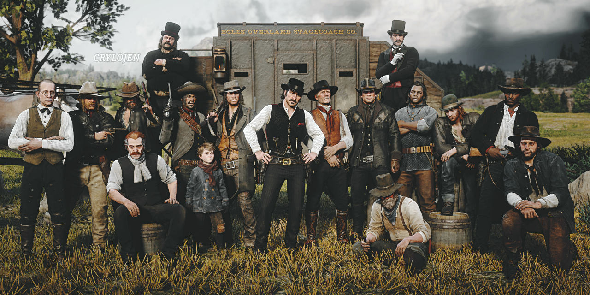
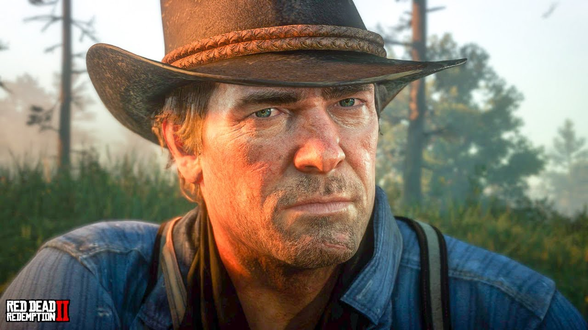
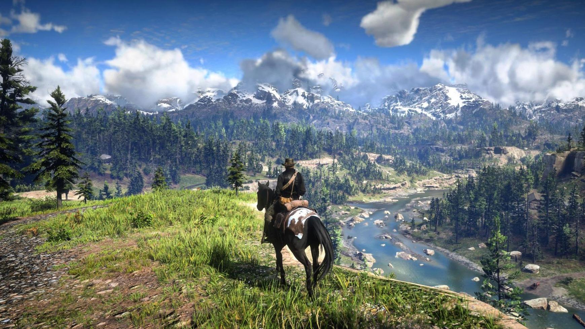
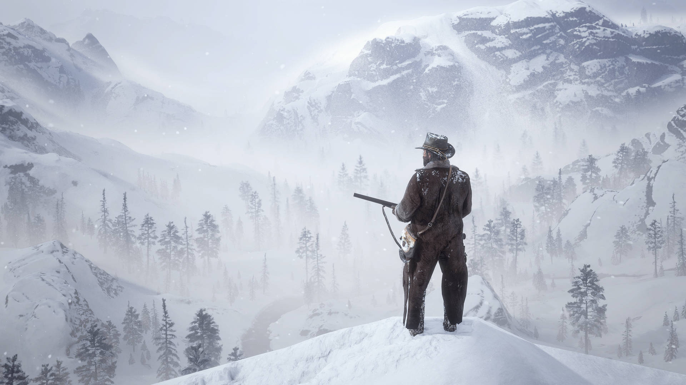
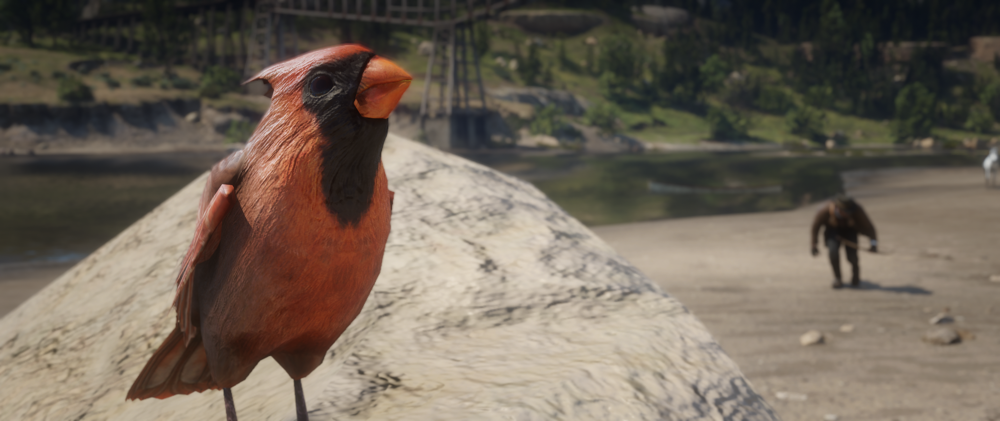
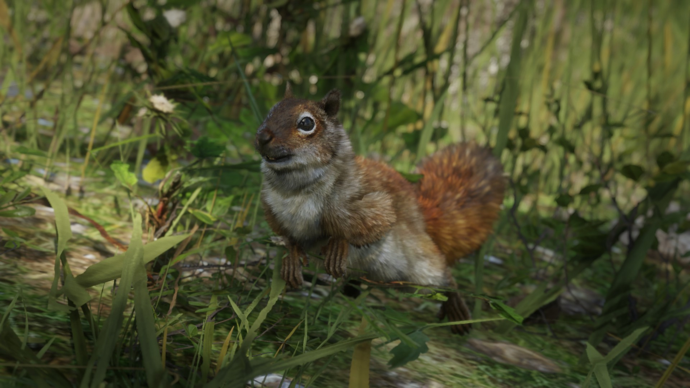
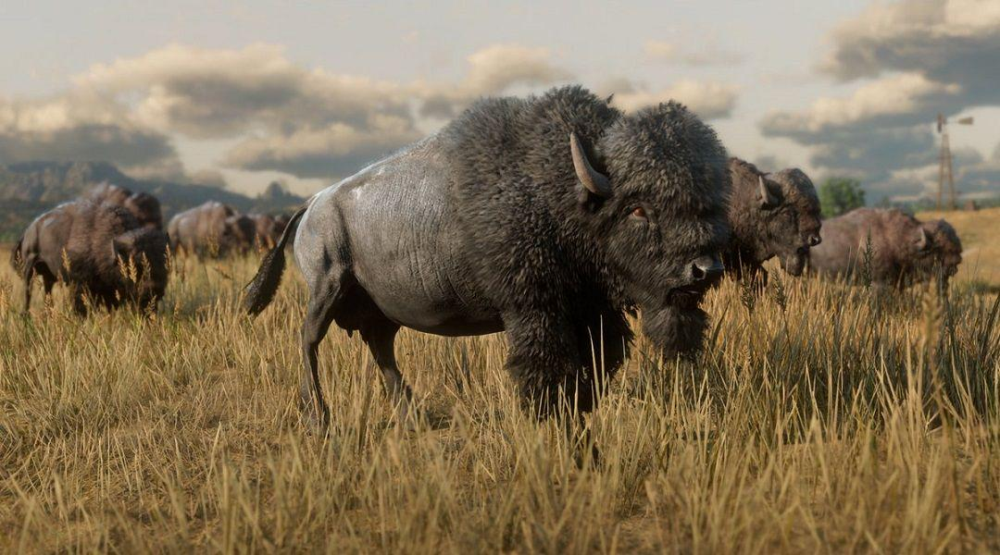
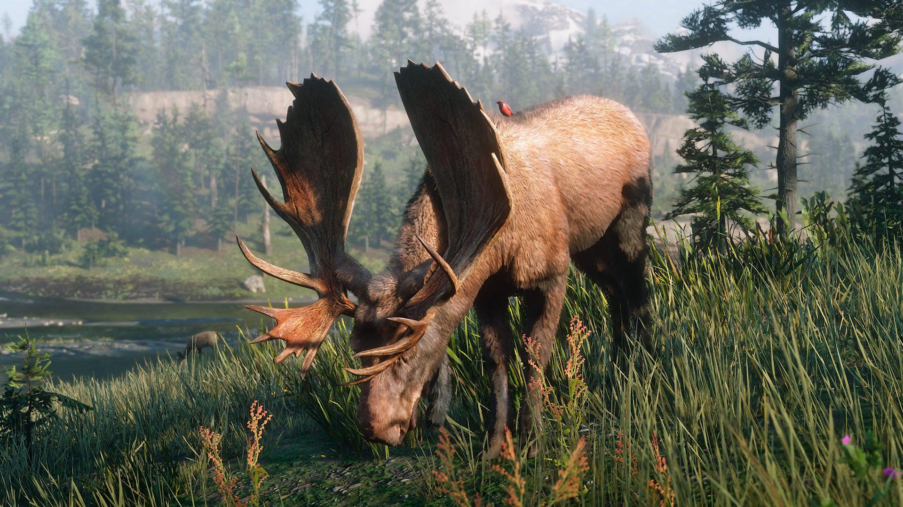

Red Dead Redemption 2 — Uma Experiência Além dos Jogos
O Projeto Mais Ambicioso da Rockstar Games
Quando Red Dead Redemption 2 foi lançado em 2018, o mundo dos videogames percebeu rapidamente que aquilo não era apenas mais um jogo de mundo aberto. A Rockstar já era conhecida por criar experiências gigantescas e revolucionárias, mas Red Dead 2 ultrapassou qualquer expectativa existente na época.
O desenvolvimento durou cerca de oito anos e envolveu milhares de profissionais espalhados ao redor do mundo. Artistas, programadores, roteiristas, animadores, músicos, atores e designers trabalharam juntos para construir um universo absurdamente detalhado. O orçamento estimado ultrapassou os 500 milhões de dólares, tornando o projeto uma das produções mais caras da história do entretenimento, rivalizando até mesmo com grandes filmes de Hollywood.
E o mais impressionante foi o retorno. Em poucos dias o jogo arrecadou centenas de milhões de dólares e rapidamente entrou para a lista dos maiores lançamentos da indústria. Porém, o sucesso de Red Dead Redemption 2 não aconteceu apenas pelo marketing ou pelo nome da Rockstar. O que realmente marcou as pessoas foi o cuidado absurdo colocado em cada detalhe do jogo.

Os Jogos Que Prepararam o Caminho
Antes de Red Dead Redemption 2, a Rockstar já havia revolucionado os videogames diversas vezes. Jogos como Grand Theft Auto V redefiniram o conceito de mundo aberto moderno. Bully mostrou como até uma escola poderia se tornar um universo vivo e memorável. Max Payne 3 impressionou pelo realismo cinematográfico e pela narrativa pesada, enquanto L.A. Noire inovou com tecnologia facial extremamente avançada para a época.
Mas mesmo com tantos jogos históricos, foi Red Dead Redemption 2 que alcançou algo diferente. Muitos jogadores não o enxergam apenas como entretenimento. Para uma enorme parte da comunidade, o jogo virou uma experiência emocional, quase como uma lembrança real vivida dentro de outro mundo.
Isso acontece porque Red Dead Redemption 2 não tenta ser apenas divertido. Ele tenta ser humano.
Uma História Que Não Tem Pressa
A história acompanha Arthur Morgan, membro da gangue Van der Linde, durante os últimos anos do velho oeste americano. O mundo está mudando, as cidades estão crescendo, a lei está avançando e os fora da lei começam lentamente a desaparecer.

Mas o mais marcante não é apenas a narrativa principal. É o ritmo dela.
Red Dead Redemption 2 não tenta prender a atenção do jogador a cada segundo com explosões, ação ou recompensas rápidas. O jogo prefere desacelerar tudo. Você passa minutos cavalgando enquanto conversa com personagens, observa paisagens ou simplesmente escuta os sons da natureza.

E isso acabou dividindo opiniões. Muita gente considera exatamente esse ritmo mais lento o maior charme do jogo. Outros simplesmente não conseguem se adaptar, principalmente uma geração acostumada com conteúdos rápidos, vídeos curtos e jogos que entregam estímulo o tempo inteiro. Red Dead Redemption 2 funciona de outro jeito. O jogo dita o ritmo da experiência, não o jogador.
Se a viagem demora, ela demora. Se começa uma conversa, você escuta. Se o clima muda, o mundo muda junto. Tudo acontece no tempo daquele universo.

O Mundo Mais Vivo Já Feito em Um Game
O mapa de Red Dead Redemption 2 é facilmente um dos maiores destaques do jogo. Não apenas pelo tamanho, mas pela sensação constante de que aquele mundo realmente está vivo.Cada região possui identidade própria. As montanhas congeladas passam uma sensação de isolamento. Os pântanos parecem desconfortáveis e perigosos. As pequenas cidades carregam o clima clássico do velho oeste, enquanto Saint Denis representa o avanço da modernização.
Só que o verdadeiro absurdo está nos detalhes pequenos.Os animais possuem comportamentos próprios, caçam uns aos outros e reagem ao ambiente. A vegetação muda dependendo da região. A neve acumula pegadas. O barro suja roupas e cavalos. Até os corpos entram em decomposição com o passar do tempo. São detalhes que muitas vezes passam despercebidos, mas que juntos criam uma imersão absurda.




NPCs e Eventos Aleatórios
Outro detalhe que ajudou Red Dead Redemption 2 a se destacar foram os NPCs e os eventos aleatórios espalhados pelo mapa. As pessoas dentro do jogo possuem rotinas próprias, trabalham, discutem, bebem em bares, limpam lojas e reagem constantemente às ações do jogador.
Dependendo da aparência de Arthur Morgan, os NPCs podem comentar sobre sujeira, roupas ou até sobre o comportamento dele. Isso cria uma sensação muito maior de presença dentro daquele universo.
Os eventos aleatórios também tornam cada jornada diferente. Durante uma simples viagem o jogador pode encontrar alguém pedindo ajuda, cair em uma emboscada, descobrir uma cabana abandonada ou presenciar situações completamente inesperadas na estrada. Esses encontros aparecem de forma natural e ajudam o mundo a parecer imprevisível o tempo inteiro.
A Música e a Atmosfera
A trilha sonora de Red Dead Redemption 2 é uma das partes mais marcantes da experiência. Diferente de muitos jogos que utilizam música constantemente, Red Dead sabe usar muito bem o silêncio. Durante boa parte da aventura o jogador escuta apenas o vento, os passos do cavalo, chuva e sons da natureza.
Isso faz com que os momentos musicais tenham um impacto emocional ainda maior. Canções como That's the Way It Is, Unshaken e Cruel World acabaram se tornando inesquecíveis para muitos jogadores justamente pela forma como aparecem durante a história.
A música não serve apenas como fundo sonoro. Ela ajuda a transmitir emoções, reforçar momentos importantes e aumentar ainda mais a conexão do jogador com Arthur Morgan e com aquele universo.
Premiações e Reconhecimento Mundial
Desde o seu lançamento, Red Dead Redemption 2 rapidamente deixou de ser apenas um sucesso comercial para se tornar também um dos jogos mais premiados da indústria. O nível técnico, a narrativa cinematográfica, a construção do mundo aberto e a atuação dos personagens fizeram o jogo dominar premiações importantes ao redor do mundo.
Durante o The Game Awards 2018, considerado uma das maiores premiações dos videogames, Red Dead Redemption 2 venceu categorias importantes como:
- Melhor Narrativa
- Melhor Trilha Sonora
- Melhor Design de Áudio
- Melhor Design de Áudio
- Melhor Performance, graças à atuação de Roger Clark como Arthur Morgan
Além disso, o jogo recebeu dezenas de indicações e foi apontado por muitos veículos especializados como um dos maiores lançamentos da década.
O reconhecimento não ficou apenas nas premiações tradicionais. O jogo também foi extremamente elogiado pela crítica especializada e pelos próprios jogadores, principalmente pelo nível absurdo de detalhes presentes no mundo aberto. Muitos analistas compararam Red Dead Redemption 2 a grandes produções do cinema por causa da qualidade da direção, roteiro e construção emocional dos personagens.
A atuação de Arthur Morgan acabou se tornando um dos pontos mais marcantes do jogo. O personagem começou sendo visto apenas como mais um fora da lei bruto, mas ao longo da história se transformou em um dos protagonistas mais humanos e complexos já criados nos videogames. Isso ajudou o jogo a ganhar ainda mais reconhecimento dentro da indústria.
Outro destaque importante foi a trilha sonora. Músicas como That's the Way It Is e Unshaken se tornaram extremamente populares entre os jogadores e ajudaram a reforçar o peso emocional de momentos importantes da narrativa.
Mesmo anos após o lançamento, Red Dead Redemption 2 continua aparecendo em listas dos melhores jogos já feitos. Para muitos jogadores e críticos, ele não marcou apenas uma geração, mas elevou o nível do que um videogame pode alcançar em narrativa, ambientação e imersão.
Uma Experiência Que Ficou Marcada
Red Dead Redemption 2 conseguiu algo raro dentro da indústria dos videogames: criar um mundo que muitos jogadores sentiram saudade depois de terminar a história. Não apenas pelas missões ou pelos gráficos impressionantes, mas pela atmosfera, pelos personagens, pela trilha sonora e pela sensação constante de estar vivendo dentro daquele universo.
Por isso, até hoje, muita gente não considera Red Dead Redemption 2 apenas um jogo, mas sim uma experiência que marcou uma geração inteira de jogadores.